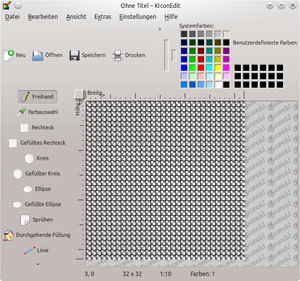
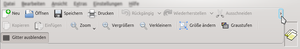

KIconEdit
Dieser Artikel wurde für die folgenden Ubuntu-Versionen getestet:
Ubuntu 16.04 Xenial Xerus
Zum Verständnis dieses Artikels sind folgende Seiten hilfreich:
KIconedit  ist ein einfach zu bedienendes Werkzeug für die KDE-Desktopoberfläche zur Erstellung und Bearbeitung von Programmsymbolen. Das Programm ist unter der GNU General Public License (GPL) herausgegeben.
ist ein einfach zu bedienendes Werkzeug für die KDE-Desktopoberfläche zur Erstellung und Bearbeitung von Programmsymbolen. Das Programm ist unter der GNU General Public License (GPL) herausgegeben.
Auswahl der wichtigsten Programmeigenschaften:
Malwerkzeuge wie Linie, Freihandzeichnung, Radierer, Pipette, Ellipsen, Füllwerkzeug, Sprühwerkzeug sowie Rechtecke und Kreise (gefüllt und ungefüllt)
Auswahlwerkzeuge
Rücknahme/Wiederholen von Bearbeitungsschritten (bei den meisten Funktionen)
Schnelle Umwandlung in Graustufenbilder möglich
Erstellen von Icons in vorgegebener oder benutzerdefinierter Größe
Nachträgliche Größenänderung von Icons möglich
Lesen und Speichern von zahlreichen Dateiformaten wie XPM, PGM, PBM, BMP, EPS, JPG, TIFF, PNG, XBM u.a.
|  |
| KIconedit |
Installation¶
Zur Installation [1] ist folgendes Paket notwendig:
kiconedit (universe)
 mit apturl
mit apturl
Paketliste zum Kopieren:
sudo apt-get install kiconedit
sudo aptitude install kiconedit
Bei Desktopoberflächen, welche ein klassisches Menü bereitstellen, ist KIconEdit nach erfolgreicher Installation in der Regel im Menüpunkt "Grafik" zu finden. Unter KDE erscheint das Programm im Menüpunkt "Grafik -> Weitere Programme -> KIconEdit (Symbol-Editor)".
Bedienung¶
Die Bedienung des Programms gestaltet sich intuitiv und ist über die Werkzeugschaltflächen oder die Menüs leicht zu bewerkstelligen.
Grundlegende Programmfunktionen¶
Das Öffnen eines Bildes erfolgt wie allgemein üblich über "Datei -> Öffnen" oder über die unter der Menüleiste gelegene Schaltfläche "Öffnen" (alternativ Tastenkürzel Strg + O ). Die Neuerstellung eines Icons geschieht über "Datei -> Neu" oder die Schaltfläche "Neu" (alternativ Strg + N ). Hierbei öffnet sich ein kleiner Assistent, welcher die Erstellung auf Basis einer Vorlage oder "Von Grund auf neu" unter benutzerdefinierter Auswahl der Symbolgröße erlaubt. 
Ein Klick auf den kleinen, links neben der Iconvorschau befindlichen Pfeil fördert temporär eine erweiterte Funktionsleiste mit weiteren nützlichen Schaltflächen zutage.
Werkzeuge¶
Die Mal- und Zeichenwerkzeuge sind unmittelbar über den linken vertikalen Werkzeugbereich oder über das Menü "Extras" auswählbar.
Farben¶
Als Standard-Farbpalette steht rechts oben eine Palette aus den KDE-Systemfarben zur Verfügung. Weitere Farben können definiert werden, indem man einen Doppelklick auf ein Farbfeld im rechten Bereich "Benutzerdefinierte Farben" ausführt, im aufklappenden Farbfenster die gewünschte Farbe einstellt und mit "OK" bestätigt. Die benutzerdefinierte Farbe steht ab sofort, allerdings nur für die Dauer der aktuellen Sitzung für die weitere Arbeit zur Verfügung.
Über Menü "Bearbeiten" kann das erstellte farbige Symbol in Graustufen umgewandelt werden und die Größe geändert werden.
Achtung!
Die Aktionen "Graustufen" und "Größe ändern" können nicht rückgängig gemacht werden! Die Größenänderung beispielsweise betrifft das ganze Icon, also nicht nur die Leinwand, so dass es zu einer Verzerrung und damit grundsätzlichen Veränderung des Bildes kommt. Daher ist bei beiden Aktionen aus Sicherheitsgründen eine vorherige Sicherheitskopie des Originalbildes empfehlenswert.
Ansichtsoptionen¶
Mittels Menü "Ansicht" kann zur besseren Erkennbarkeit bzw. Übersicht eine Zoomeinstellung (bis 1000%) vorgenommen werden. Als Tastenkürzel für das Hinein- bzw. Herauszoomen sind Strg + + bzw. Strg + - voreingestellt.
Das Hilfsgitter zur Identifizierung der einzelnen Pixel kann über "Einstellungen -> Gitter ausblenden/anzeigen" nach Wunsch aktiviert oder deaktiviert werden.
Tastenkürzel¶
Zur Steuerung stehen dem Nutzer neben der normalen Werkzeug- und Menüsteuerung mithilfe der Maus auch Tastenkürzel zur Steuerung der Programmfunktionen zur Verfügung, welche über das Menü "Einstellungen -> Kurzbefehle festlegen" eingesehen und bei Bedarf individuell vom Benutzer definiert werden können. Obwohl in der Werkseinstellung nur einige wenige Tastenkürzel vordefiniert sind, können doch letztlich alle Funktionen mit Tastenbefehlen belegt werden und somit die Programmbedienung deutlich effektiver gestaltet werden.
Einstellungen¶
Über das Menü "Einstellungen -> KIconEdit einrichten" kann Zugriff auf die weiteren Programmeinstellungen genommen werden. So können beispielsweise zusätzliche Symbolvorlagen eingebunden, der Hintergrund der Arbeitsfläche festgelegt oder die Einstellungen zum Transparenzgitter festgelegt werden.
Handbuch¶
Bei über die Bedienungsinformationen in diesem Artikel hinausgehenden Fragestellungen kann über das KDE-Hilfezentrum auf das von den Entwicklern erstellte Handbuch zurückgegriffen werden. Dieses ist über das Menü "Hilfe -> Handbuch zu KIconEdit" (alternativ Tastenkürzel F1 ) zugänglich. Alternativ steht das Handbuch auch im Internet unter The KIconEdit Handbook bereit.
 Übersichtsartikel
Übersichtsartikel- Erstellt mit Inyoka
-
 2004 – 2017 ubuntuusers.de • Einige Rechte vorbehalten
2004 – 2017 ubuntuusers.de • Einige Rechte vorbehalten
Lizenz • Kontakt • Datenschutz • Impressum • Serverstatus -
Serverhousing gespendet von